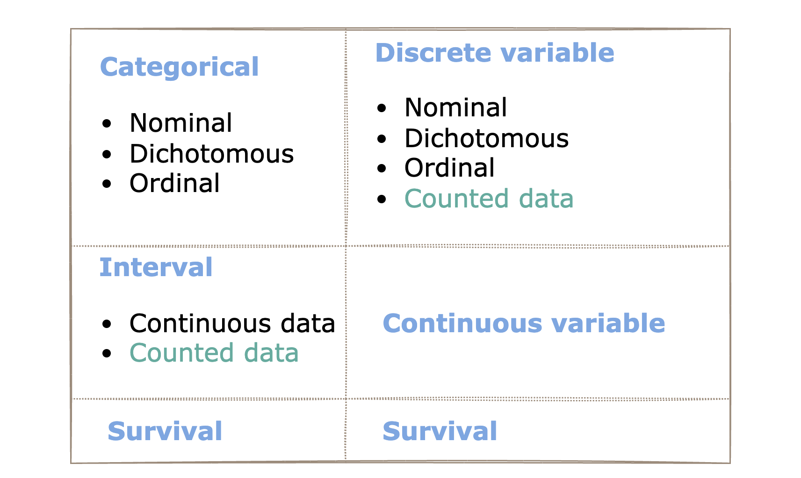
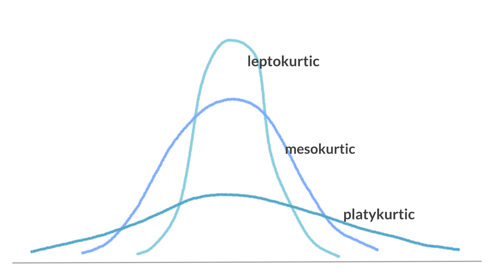
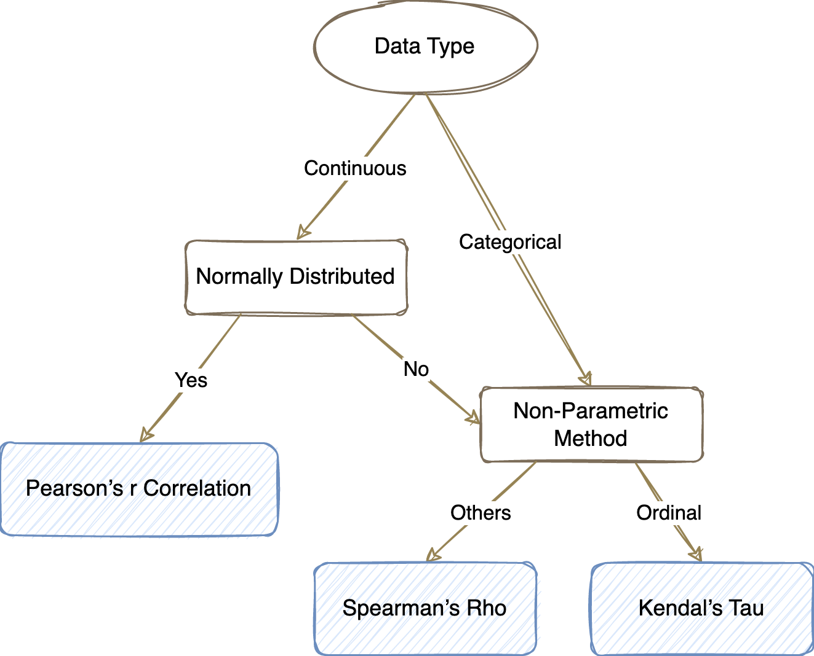
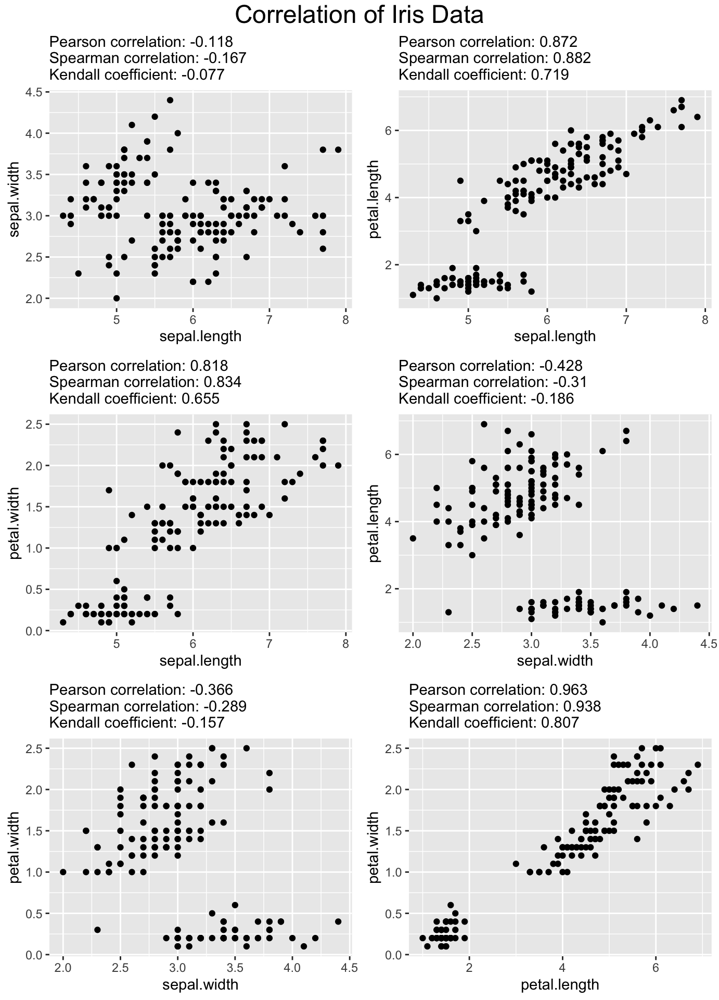

§ Chapter1 Data Decription & Inference
1.1 Some Concepts
Type of Variables

- Nominal scale are sometimes called qualitative observations.
- Numerical scale are sometimes called quantitative observations.
- Many biological ratio data are discrete.
Definitions
Population: the collection of all individuals or items under consideration in a statistical study. (Weiss, 1999)
Sample: the part of the population from which information is collected. (Weiss, 1999)
Parameter: A descriptive measure for a population, ex. \(\mu, \sigma\)
Statistic: A descriptive measure for a sample, ex. \(\bar{x}, s\)
Hypothesis Testing
P-value
In frequentist statistics, p values are defined asthe probability of obtaining a test statistic at least as large as that observed, if the null hypothesis is true.Type I & Type II Errors
Type I error: Rejecting the null hypothesis when it is in fact true (even though it is true).
Type II error: Not rejecting the null hypothesis when it is in fact false, denoted β.

Significance level
The probability of making Type I error, is called the significance level α, rejecting a true null hypothesis.Statistical Power
Power(1-β) is a probability you want to tell a story if there was a story.
1.2 Data Tables
This famous (Fisher’s or Anderson’s) iris data set gives the measurements in centimeters of the variables sepal length and width and petal length and width, respectively, for 50 flowers from each of 3 species of iris. The species are Iris setosa, versicolor, and virginica.
## 'data.frame': 150 obs. of 5 variables:
## $ Sepal.Length: num 5.1 4.9 4.7 4.6 5 5.4 4.6 5 4.4 4.9 ...
## $ Sepal.Width : num 3.5 3 3.2 3.1 3.6 3.9 3.4 3.4 2.9 3.1 ...
## $ Petal.Length: num 1.4 1.4 1.3 1.5 1.4 1.7 1.4 1.5 1.4 1.5 ...
## $ Petal.Width : num 0.2 0.2 0.2 0.2 0.2 0.4 0.3 0.2 0.2 0.1 ...
## $ Species : Factor w/ 3 levels "setosa","versicolor",..: 1 1 1 1 1 1 1 1 1 1 ...knitr::kable(
head(iris, 15), caption = 'Iris data table',
booktabs = TRUE,) %>%
kable_styling (full_width = F, font_size = 12.5 )| Sepal.Length | Sepal.Width | Petal.Length | Petal.Width | Species |
|---|---|---|---|---|
| 5.1 | 3.5 | 1.4 | 0.2 | setosa |
| 4.9 | 3.0 | 1.4 | 0.2 | setosa |
| 4.7 | 3.2 | 1.3 | 0.2 | setosa |
| 4.6 | 3.1 | 1.5 | 0.2 | setosa |
| 5.0 | 3.6 | 1.4 | 0.2 | setosa |
| 5.4 | 3.9 | 1.7 | 0.4 | setosa |
| 4.6 | 3.4 | 1.4 | 0.3 | setosa |
| 5.0 | 3.4 | 1.5 | 0.2 | setosa |
| 4.4 | 2.9 | 1.4 | 0.2 | setosa |
| 4.9 | 3.1 | 1.5 | 0.1 | setosa |
| 5.4 | 3.7 | 1.5 | 0.2 | setosa |
| 4.8 | 3.4 | 1.6 | 0.2 | setosa |
| 4.8 | 3.0 | 1.4 | 0.1 | setosa |
| 4.3 | 3.0 | 1.1 | 0.1 | setosa |
| 5.8 | 4.0 | 1.2 | 0.2 | setosa |
## Sepal.Length Sepal.Width Petal.Length Petal.Width Species
## Min. :4.300 Min. :2.000 Min. :1.000 Min. :0.100 setosa :50
## 1st Qu.:5.100 1st Qu.:2.800 1st Qu.:1.600 1st Qu.:0.300 versicolor:50
## Median :5.800 Median :3.000 Median :4.350 Median :1.300 virginica :50
## Mean :5.843 Mean :3.057 Mean :3.758 Mean :1.199
## 3rd Qu.:6.400 3rd Qu.:3.300 3rd Qu.:5.100 3rd Qu.:1.800
## Max. :7.900 Max. :4.400 Max. :6.900 Max. :2.500Import data from CSV file.
class <- read.csv ( "data/class.csv")
kbl(head(class, 20), caption = 'Class table',
booktabs = TRUE ) %>%
kable_styling (full_width = F, font_size = 12.5 ) %>%
column_spec(2, color= ifelse( class$sex == "F", "pink", "#42698d" ), background= "#e9eeea") | name | sex | age | height | weight |
|---|---|---|---|---|
| Alice | F | 13 | 56.5 | 84.0 |
| Becka | F | 13 | 65.3 | 98.0 |
| Gail | F | 14 | 64.3 | 90.0 |
| Karen | F | 12 | 56.3 | 77.0 |
| Kathy | F | 12 | 59.8 | 84.5 |
| Mary | F | 15 | 66.5 | 112.0 |
| Sandy | F | 11 | 51.3 | 50.5 |
| Sharon | F | 15 | 62.5 | 112.5 |
| Tammy | F | 14 | 62.8 | 102.5 |
| Alfred | M | 14 | 69.0 | 112.5 |
| Duke | M | 14 | 63.5 | 102.5 |
| Guido | M | 15 | 67.0 | 133.0 |
| James | M | 12 | 57.3 | 83.0 |
| Jeffrey | M | 13 | 62.5 | 84.0 |
| John | M | 12 | 59.0 | 99.5 |
| Philip | M | 16 | 72.0 | 150.0 |
| Robert | M | 12 | 64.8 | 128.0 |
| Thomas | M | 11 | 57.5 | 85.0 |
| William | M | 15 | 66.5 | 112.0 |
1.3 Data Graphs
library("ggplot2")
bp <- ggplot(iris, aes(Species, Sepal.Length, color=Species) )+
geom_boxplot(outlier.shape = 18, outlier.size = 4)
library("wesanderson")
bp + scale_color_manual(values=wes_palette(n=3,name = "Moonrise3"))Figure 1.1: Iris boxplot
hp <- ggplot(iris, aes(x=Sepal.Length, stat(density), col=Species, fill=Species))+
geom_histogram(alpha=0.5)+
geom_density(alpha=0.6)
hp + scale_color_manual(values=wes_palette(n=3,name = "Moonrise3"))+
scale_fill_manual(values=wes_palette(n=3,name = "Moonrise3"))## `stat_bin()` using `bins = 30`. Pick better value with `binwidth`.Figure 1.2: Iris histogram plot
p <- ggplot(iris, aes(Sepal.Length, Sepal.Width))+
geom_point(size=3, aes(col=Species, shape=Species))
p + scale_color_manual(values=wes_palette(n=3,name = "Moonrise3"))Figure 1.3: Iris ggplot
1.4 Skewness & Kurtosis
Skewness is a measure of the asymmetry of a distribution. This value can be positive or negative.
The sample skewness formula: \[\begin{equation} \sqrt{n}\frac{\sum_{i}^{n}\left ( X_{i}-\bar{X} \right )^{3}} {\left (\sum_{i}^{n} \left ( X_{i}-\bar{X} \right )^{2} \right )^{3/2}} \end{equation}\]
- If skewness is < -1 or > 1, the distribution is highly skewed.
- If skewness is between -1 and -0.5 or between 0.5 and 1, the distribution is moderately skewed.
- If skewness is between -0.5 and 0.5, the distribution is approximately symmetric.
## [1] 0.3117531Kurtosis is a measure of whether or not a distribution is heavy-tailed or light-tailed relative to a normal distribution. The Pearson kurtosis value of a normal distribution, \(N \sim (0,1)\) is 3.

The sample kurtosis formula: \[\begin{equation} n\frac{\sum_{i}^{n}(X_i-\bar{X})^4}{(\sum_{i}^{n}(X_i-\bar{X})^2)^2} \end{equation}\]
- If kurtosis is >3, then the distribution is leptokurtic.
- If kurtosis is =3, then the distribution is mesokurtic.
- If kurtosis is <3, then the distribution is platykurtic.
## [1] 2.4264321.5 Correlation

1.5.1 Pearson’s r Correlation
Pearson’s r correlation assumptions: Each observation should have a pair of values, Variable should be continuous, normally distributed, an basence of outliers, assumes linearity and homoscedasticity.
\[\begin{equation} r = \frac{\sum(X - \overline{X})(Y - \overline{Y})} {\sqrt{\sum(X-\overline{X})^{2}\cdot\sum(Y-\overline{Y})^{2}}}\\ \end{equation}\]
1.5.2 Spearman’s Rho
Spearman’s Rho assumptions: nearly all the same assumptions as the pearson correlation, but it doesn’t rely on normality, so it is non-parametric method.
\[\begin{equation} \rho = \frac{\sum_{i=1}^{n}(R(x_i) - \overline{R(x)})(R(y_i) - \overline{R(y)})} {\sqrt{\sum_{i=1}^{n}(R(x_i) - \overline{R(x)})^{2}\cdot\sum_{i=1}^{n}(R(y_i)-\overline{R(y)})^{2}}} \\ = 1 - \frac{6\sum_{i=1}^{n}(R(x_i) - R(y_i))^{2}}{n(n^{2} - 1)} \\ \end{equation}\] \[\begin{align} & R(x_i) = rank~of~x_i,~~ R(y_i) = rank~of~y_i \\ & \overline{R(x)} =mean ~ rank ~ of ~ x, ~~ \overline{R(y)} =mean ~ rank ~ of ~ y \\ &~ n = number ~ of ~ pairs \end{align}\]
1.5.3 Kendal’s Tau
Kendal’s Tau the same assumptions of Spearman’s rank correlation coefficient
\[\begin{equation} \tau = \frac{n_c - n_d}{n_c + n_d} = \frac{n_c - n_d}{n(n-1)/2} \end{equation}\] \[\begin{align} Where, ~ n_c &= number ~ of ~ concordant ~ pairs\\ n_d &= number ~ of ~ discordant ~ pairs\\ n &= number ~ of ~ pairs \end{align}\]
# Loading dataset
data_iris <- read.csv('data/iris.csv')
## Getting rid of id
data_iris <- data_iris %>%
select(-Id, -Species)
# Function
get_correlation <- function(x, y) {
paste("Pearson correlation:", round(cor(x, y, method = 'pearson'), 3),
"\nSpearman correlation:", round(cor(x, y, method = 'spearman'), 3),
"\nKendall coefficient:", round(cor(x, y, method = 'kendall'), 3))
# For getting correlations
}
get_plot <- function(df) {
df %>%
ggplot(aes_string(colnames(df)[1], colnames(df)[2])) +
geom_point() +
labs(subtitle = get_correlation(df %>%
select(colnames(df)[1]) %>%
unlist(), df %>%
select(colnames(df)[2]) %>%
unlist()))
}
# Plotting
list_plot <- list()
order <- 1
for (i in 1:ncol(data_iris)) {
if (i < 4) {
for (j in (i + 1):ncol(data_iris)) {
temp <- data_iris %>%
select(colnames(data_iris)[i], colnames(data_iris)[j])
list_plot[[order]] <- get_plot(temp)
order <- order + 1
}
}
}## Warning: `aes_string()` was deprecated in ggplot2 3.0.0.
## ℹ Please use tidy evaluation idioms with `aes()`.
## ℹ See also `vignette("ggplot2-in-packages")` for more information.
## This warning is displayed once every 8 hours.
## Call `lifecycle::last_lifecycle_warnings()` to see where this warning was generated.grid.arrange(list_plot[[1]], list_plot[[2]], list_plot[[3]], list_plot[[4]], list_plot[[5]], list_plot[[6]], ncol = 2, top=textGrob("Correlation of Iris Data", gp=gpar(fontsize=18) ) )
In all cases, the absolute value of Kendall correlation coefficient is less than that of others. It can be seen that Kendall correlation is more conservative than the others.